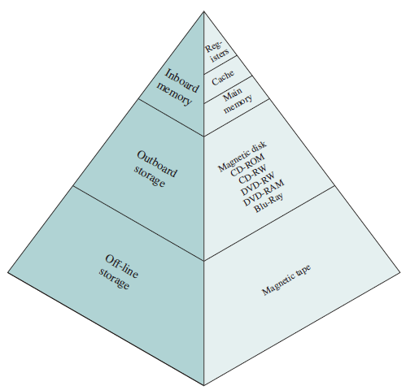
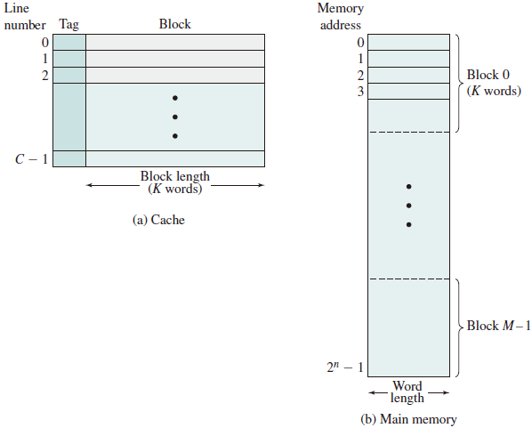

Memory Management
The Memory Hierarchy
A typical hierarchy is illustrated in figure below.

As one goes down the hierarchy, the following occur:
- Decreasing cost per bit
- Increasing capacity
- Increasing access time
- Decreasing frequency of access to the memory by the processor
Cache Memory
Although cache memory is invisible to the OS, it interacts with other memory management hardware.
Cache Principles
Cache memory is intended to provide memory access time approaching that of the fastest memories available, and at the same time support a large memory size that has the price of less expensive types of semiconductor memories. The concept is illustrated in the Figure below

There is a relatively large and slow main memory together with a smaller, faster cache memory.
The next Figure depicts the use of multiple levels of cache.

Main memory consists of up to addressable words, with each word having a unique -bit address. For mapping purposes, this memory is considered to consist of a number of fixed length blocks of K words each. That is there are blocks. Cache consists of C slots (lines) of K words each, and the number of slots is considerably less than the number of main memory blocks ().

Memory Management Methods
- Relocation
- Segmentatio n
- Paging
- Virtual Memory
Address Space
The range of addresses available to a computer program.
-
A logical address is a reference to a memory location independent of the current assignment of data to memory; a translation must be made to a physical address before the memory access can be achieved.
-
A relative address is a particular example of logical address, in which the address is expressed as a location relative to some known point, usually a value in a processor register.
-
A physical address, or absolute address is an actual location in main memory.
Generating Logical Address
- Compile
- Assemble
- Link
- Relocation
Procedures
- CPU
- ALU: 需要逻辑地址的内存内容
- MMU：进行逻辑地址和物理地址的转换
- CPU 控制逻辑：给总线发送物理地址请求
- 内存： 发送物理地址的内容给 CPU 或接受 CPU 数据到物理地址
- 操作系统：建立逻辑地址与物理地址的映射
Address Check

Memory Partitioning
The principal operation of memory management is to bring processes into main memory for execution by the processor.
Fixed Partitioning
In most schemes for memory management, we can assume the OS occupies some fixed portion of main memory, and the rest of main memory is available for use by multiple processes. The simplest scheme for managing this available memory is to partition it into regions with fixed boundaries.
Description
Main memory is divided into a number of static partitions at system generation time. A process may be loaded into a partition of equal or greater size.
Strengths
Simple to implement; little operating system overhead.
Weaknesses
Inefficient use of memory due to internal fragmentation; maximum number of active processes is fixed.